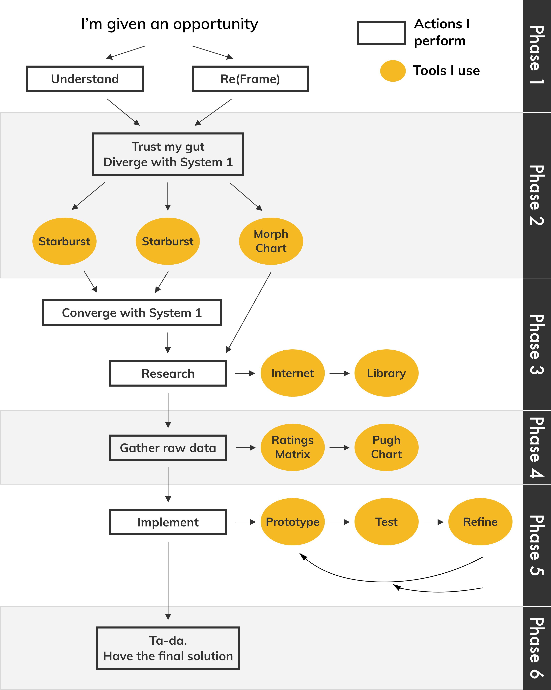

Li.

My Engineering Design
Philosophy
The following flow chart showcases my personal design process. Rather than making a detailed, step-by-step protocol, I start with a basic outline that I can then build on. This makes it easy to adapt the design to new requirements.
Phase 1 is where I'm introduced to the opportunity. What I do first is take in all the information that I'm given. To understand it, I jot down the key points on some sticky-notes, and keep this note with me throughout the entire project. What I find is that if projects are long or filled with data, often information from the beginning is lost. However, the information being provided to us at the beginning of a project is often the most important as it may have constraints or objectives that need to be considered in the final design. I would also need to understand the framing of the problem, that includes who, what, and how of the situation. For examples, questions I ask myself or my team are: "Who is impacted by this problem?" "Is the problem worth solving?"???, and reframe if necessary.
From Nobel Memorial Prize laureate Daniel Kahneman's book, Thinking, Fast and Slow, he introduces System 1 and 2. System 1 is your reflex and makes decisions based on your gut feeling, and System 2 takes longer to process and considers logic and research. My Phase 2 is solely trusting my gut with System 1, and I use brainstorming tools such as starbursting, SCAMPER, and morph charts to come up with as many ideas as possible. By thinking so fast, I don't allow myself to overthink something and prematurely shoot it down. I like portraying these brainstorming activities visual, so I utilize sticky notes and chart paper to convey my thoughts in a large art form.
Again, I use System 1 to converge my ideas, aka removing the most ridiculous ones. Sometimes I like to have fun during Phase 2, but Phase 3 filter those "non-serious" ideas away. I do further research on the internet and the library to further dwindle down the list. I often look for patents, to see if anyone else was looking for a solution to the same issue as me. The reason that I go straight to research from a morph chart (a table where I combine different elements ___), rather than using System 1 to eliminate ideas, is that the purpose of the morph chart is to come up ideas that I may find illogical, and therefore would have shot down with System 1, but there may actually be a combination that I would have never considered.
Phase 4 is gathering raw data through a continuing research or obtaining it myself (through surveys, etc). This is my favorite stage of my design process as I am an analytical person and enjoy dealing with large amounts of data that I can organize, sort, and try to find a pattern in. My preferred tools are the Ratings Matrix and the Pugh Chart, as the Ratings Matrix allows me to organize and spread out my data such that it's easy to analyze, and the Pugh Chart allows me to compare the data.
Phase 5 is where I actually apply all the data I've obtained by using the results from my Ratings Matrix and Pugh Chart to prototype, which is to model the ideas of my design through some sort of medium. A physical prototype isn't always the best. My favorite is graphical, where I get to put what I visualized in my head to paper with art, and mathematical, where I get to crunch numbers. However, I do like to get my hands dirty and build; for my most recent project, check out my fully functioning prototype here. Then comes the iterations of testing and refining, to verify my design. Refining often takes the longest time, as I learn from my mistakes and update/change the way I frame the original opportunity.
Ideally, Phase 6 is the last and final step; where I present my final solution. In reality, reaching the last step is not as easy, as somewhere along my process, I may have to go back up the flow chart and start from any of the phases all over again. Again, this is the foundation of my design process, and I build off of it depending on the opportunity I'm provided.